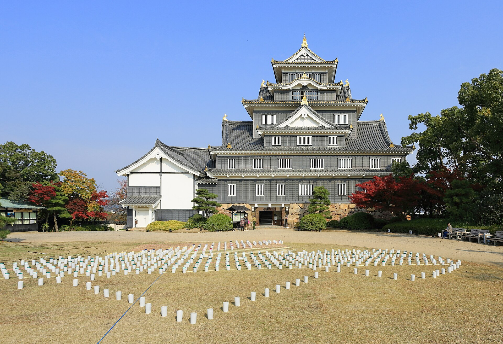
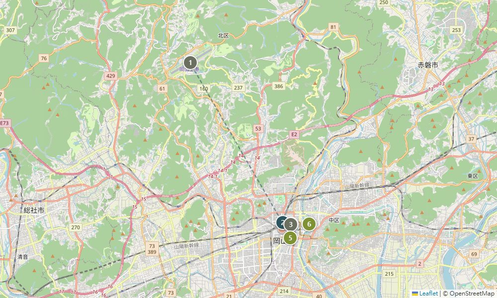

01DAY
9 / 27 星期日
抵達 · 岡山夜色

🗺 當日地圖

16:30
桃太郎機場降落入境、提行李約 30-40 分
17:25*
🚌 機場 → 利木津巴士（リムジンバス・機場巴士，約30分,¥1,000）→ 岡山站西口 時刻表↗
⚠️
機場巴士配合班機、班次不多，*一出關就確認最近一班（白天定期班較疏）。萬一沒接到，計程車是穩當備援 ↓
萬一沒接到巴士？備援與叫車
利木津巴士配合班機，國際線到著通常會加開臨時便往岡山站；但定期班白天較疏（現行表 16:55 後直接跳到 18:55）。所以一出關先看有沒有臨時便或最近一班。
備援＝計程車：機場是熱點，排班與叫車App都好叫，到岡山站約 30 分、約 ¥3,500（4人均分每人約 ¥900，和巴士差不多）。
叫車App：裝 GO 或 DiDi（岡山市區兩者都好用）。
17:55
抵岡山站 → 步行 5 分 → 後樂飯店 check-in
18:30
站前接風晚餐：味司 野村（あじつかさ のむら／元祖デミカツ丼，元祖多蜜醬炸豬排丼）｜一人 ¥1,000–1,500岡山名物「半熟蛋＋多蜜醬汁炸豬排丼」發祥老店（1931 年）。位置就在西川綠道公園駅旁，剛好接今晚的散步動線。9/27 週日營業 11:00–21:00（週一公休）地圖↗
晚餐備選（太累／客滿時，依「好到達」排序）
抵達日拖著行李，下面備選依好到達排序。價位為一人晚餐概估，紅字＝一人 ¥2,000 以上。
| 店名（中文） | 類型 | 一人約 | 為什麼推／注意 | 地圖 |
|---|---|---|---|---|
| 牛かつ 上村 （炸牛排 上村） @イオンモール岡山（永旺購物中心） | 炸牛排定食 | ¥1,000 前後 | 半熟炸牛排定食；與車站直結、拖行李最省事，商場開到 22:00 | 地圖↗ |
| さんすて岡山 （站內商場） | 站內餐廳街 （定食／炸物／炉端燒） | ¥1,000– 1,800 | 完全不用出站、最快開吃；定食、炉端燒（烤物）選擇多 | 地圖↗ |
| お好み焼き もり （大阪燒 Mori） | 鐵板／岡山在地小吃 | ¥1,000– 1,500 | 站步行 7 分。一次嚐 蒜山焼きそば（雞肉炒麵）、津山ホルモンうどん（內臟烏龍）、大阪燒 | 地圖↗ |
| 軍鶏農場 （土雞農場） @イオンモール岡山 | 土雞炭火料理／釜炊飯 | ¥2,600 前後 | 土雞炭火、釜炊白飯，家庭友善；與車站直結；價位較高 | 地圖↗ |
| 焼肉 ぐりぐり家 岡山駅前店 （燒肉 Guriguriya） | 燒肉吃到飽 | ¥3,000– 4,000 | 東口步行 1 分。多人吃肉划算；吃到飽價位較高 | 地圖↗ |
19:30
西川綠道散步 ＋ 烏城夜景岡山城夜間點燈、外觀免費（亮到 24:00）。累可改天看，每晚都點燈